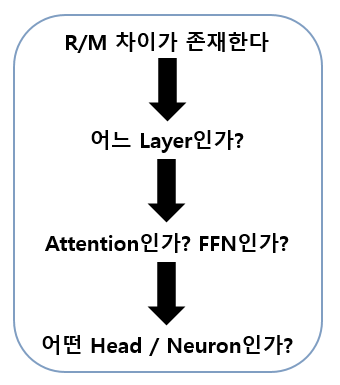
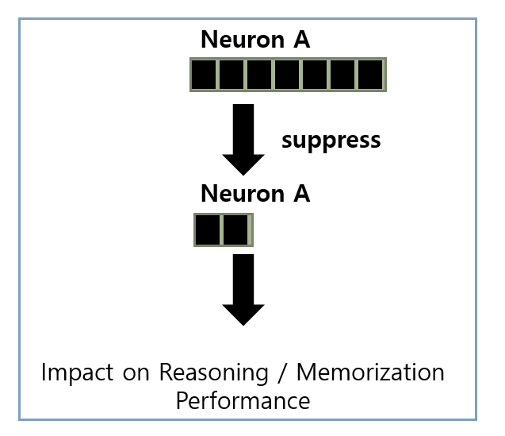
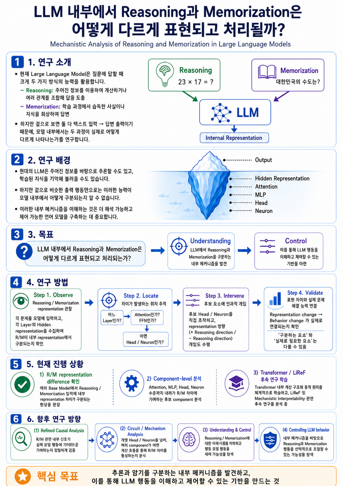

⌁
Reasoning
주어진 정보로 계산하고 여러 관계를 조합해 새로운 답을 도출하는 능력
- Information Integration
- Relation-based Computation
- Derived Answer
Mechanistic Analysis of Reasoning and Memorization in Large Language Models
겉으로는 같은 텍스트 입·출력처럼 보이는 추론과 암기. 두 능력이 모델 내부에서 어떻게 다르게 표현되고 처리되는지 추적합니다.
LLM은 주어진 정보에서 관계를 조합해 답을 도출하기도 하고, 학습 중 습득한 사실을 그대로 회상하기도 합니다. 이 연구는 두 과정의 내부 표현 차이를 관찰합니다.
주어진 정보로 계산하고 여러 관계를 조합해 새로운 답을 도출하는 능력
학습 과정에서 습득한 사실이나 지식을 직접 회상해 답하는 능력
같은 정답을 출력하더라도, 주어진 정보를 이용해 추론한 것인지 학습된 지식을 회상한 것인지 출력만으로는 알기 어렵습니다. 더 해석 가능하고 제어 가능한 언어 모델을 위해 내부 메커니즘을 들여다봅니다.
모델의 출력뿐 아니라 hidden representation과 Transformer block 내부의 attention head, MLP/FFN neuron 등 서로 다른 분석 단위에서 추론과 암기의 흔적을 찾습니다.
“LLM 내부에서 Reasoning과 Memorization은 어떻게 다르게 표현되고 처리되는가?”
Reasoning과 Memorization을 구분하는 내부 메커니즘을 이해하고, 이를 인과적으로 검증하여 LLM 행동의 이해와 제어 가능성을 탐색합니다.
표현 차이를 찾는 것에 그치지 않고, 그 차이에 기여하는 위치를 좁힌 뒤직접 개입하고 실제 행동 변화까지 확인합니다.
여러 문제를 모델에 입력하고 각 layer의 hidden representation을 수집해 R/M 구분 가능성을 확인합니다.
어느 layer에서 차이가 생기는지, attention·FFN과 개별 head·neuron 중 무엇이 기여하는지 좁혀 갑니다.
내부 표현의 변화가 실제 문제 해결 능력 변화로 이어지는지 확인해 상관과 인과를 구분합니다.


표현 수준의 차이 확인을 시작으로,차이에 기여하는 component 분석과 메커니즘 해석으로 연구 범위를 확장하고 있습니다.
여러 Base Model에서 Reasoning과 Memorization 입력의 내부 representation 차이를 확인하고, 이 차이가 Transformer layer를 거치며 형성되고 변화하는 패턴을 분석했습니다.
Attention, MLP, Head, Neuron 수준의 분석을 통해 R/M representation 차이에 기여하는 후보 Head / Neuron을 식별했습니다.
Transformer 내부 계산 구조와 동작 원리를 체계적으로 학습하고, LiReF 및 Mechanistic Interpretability 관련 후속 연구를 분석 중입니다.
관찰된 R/M 내부 표현 차이를 인과적 메커니즘 분석으로 확장합니다.
실제 모델 행동에 기능적으로 기여하는 신호인지 정밀 검증
여러 component가 어떤 계산 경로를 통해 R/M 차이를 형성하는지 분석합니다.
내부 메커니즘 이해를 바탕으로 모델 행동 제어 가능성 탐색
내부 메커니즘을 바탕으로 Reasoning과 Memorization 행동을 선택적으로 조절할 수 있는 가능성을 탐색합니다.
